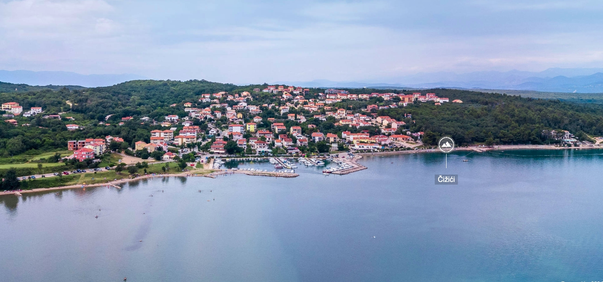

A diversified Czech family group turning ideas into real ventures since 2006 — across real estate, technology, sport & infrastructure, and retail & consumer brands.
Development, renovation and delivery of residential and commercial property — converting ideas from paper into real property.

Real estate development is a business process encompassing activities that range from the renovation and re-lease of existing buildings to the purchase of raw land and the sale of developed land or parcels to others.
Real estate developers coordinate all of these activities, converting ideas from paper to real property — different from construction, although many developers also manage the construction process.
Between 2000 and 2020, Wickr Group a.s. ran construction operations and successfully built and reconstructed numerous properties across Prague.
View references →
Unique and innovative fluids conversion through GENETT technology.

GENETT technology enables the following unique and innovative fluid-conversion opportunities:
Stadium pitch reconstruction and comprehensive snowmaking systems, delivered with specialist partners.

Together with our business partners, Wickr Group a.s. focuses primarily on the reconstruction of main pitches at football stadiums and the implementation of comprehensive snowmaking systems for ski resorts, since 2016.
Our partners are typically producers and suppliers of sport-facility equipment — companies such as Tarkett Sports, HELLASOD and SUPERSNOW SA. Together we ensure successful project implementation and provide additional added-value services.
See our references →Experience across international retail and brand development.
Wickr Group has extensive experience in the retail and consumer sector, ranging from the operation of franchise stores for established international brands to the development of its own consumer products.
Over the years, the Group has operated retail locations representing a diverse portfolio of internationally recognised fashion, lifestyle and luxury brands.
Our retail portfolio has included franchise stores for
This experience has given Wickr Group a strong understanding of international brand standards, retail operations, local market development and the successful positioning of global brands within regional markets.
Beyond franchise retail, Wickr Group has also developed and operated its own consumer brand.
Symphony Vodka was created as an independently owned spirits brand, giving the Group direct experience across brand development, product positioning, production and distribution.
Together, these activities reflect Wickr Group's experience on both sides of the consumer business — representing established international brands and building brands of its own.
Across real estate, technology, sport & infrastructure and retail & consumer brands — our team is ready to help bring your project to life.
Get in touch →